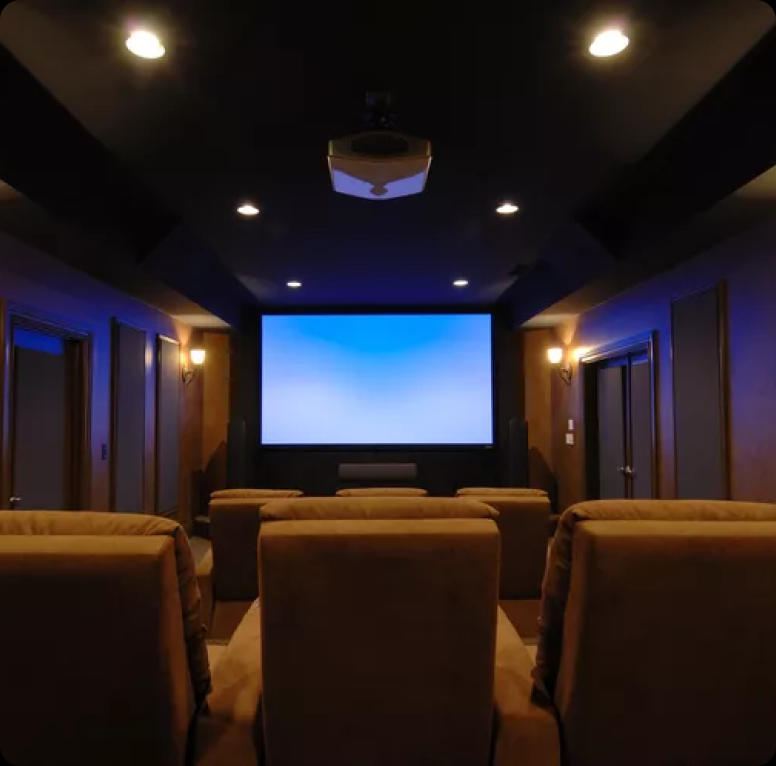
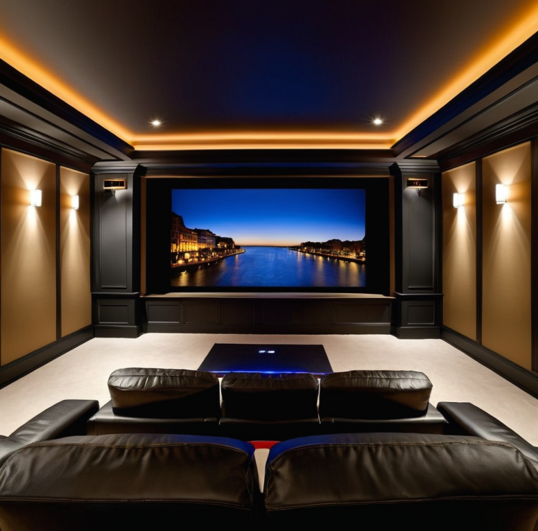

Equipment / Tools
- Electric saw
- Cordless drill
- Electric nailer
- Stud finder
- Paint roller
- Paint tray
Materials
- Planning software (optional)
- Video projector or HDTV
- Movie screen for video projectors
- Home theater audio system
- Media device rack
- Battery backup
- Two-by-fours
- Insulation (spray, rigid, etc.)
- Sound-absorbing floor covering
- Electrical cable
- Subfloor
- One-by-three and one-by-four trim (for chases)
- Flat, dark wall paint
- Drywall and related materials


Basics of a DIY Home Theater
- Screen Type: The screen is the most essential element of your home theater, and most professional designs
feature high-quality projectors. However, you can also opt for a large flatscreen television depending on
your
specific needs and budget.
- Theater Style: Decide if this will be a dedicated theater with screen-facing seats or more along the lines
of a living room with occasional screen viewing. Determine the direction the viewers will face. Decide if
you
want extras that will need to be installed, like a wet bar.
- Wired or Wireless: It is possible to build an entire home movie theater with wireless devices. Still,
Bluetooth and other short-range wireless technologies aren't always reliable. Also, routing an internet
signal
to your home theater with an Ethernet cable can be more stable than using a Wi-Fi connection.
- Light Control: Screens of nearly any brightness level can be viewed in completely dark home theaters. For
daylight viewing of video projectors, a 2,500 lumens projector or brighter is considered the minimum
brightness level. HDTVs are viewable in daylight. In either case, most home theaters benefit from having
curtains and doors that allow you to shut out the light when needed.
- Sound Control: Soundproof your home theater room with sound-absorbent insulated walls that provide better
sound quality within the theater and prevent noise from migrating to other rooms. Soundproof doors, drywall,
and floor underlayment can also be installed..
Safety Considerations
- If your project involves removing load-bearing walls, first consult a structural engineer or contractor.
If
you are unskilled in electrical work, hire an electrician for running new circuits from the service panel or
for any type of electrical work.
1. Plan Layout
Lay out the space with planning software or on paper. While designing your home theater
room, be sure to
specify the locations of the following:
- Screen
- Media device closet
- All seating arrangements
- Location of electric outlets
- Lighting
If you're working with limited space, a few small home theater room ideas can help you
plan the layout:
- Opt for smaller chairs or less seating overall.
- Mount all of your equipment on the walls to save floor space.
- Place furniture closer to walls opposite the door to allow for walking room.
- House media devices in a cabinet instead of building a full-sized closet.
2. Frame Walls
-
For a home theater that you are building from scratch, frame the interior walls. Even if you are using an
existing room, you may still need to define the home theater space by building a wall or two.Basement walls
must be framed differently:
-
Use foam insulation that's contacting the exterior masonry walls. Wall framing should be applied to the
front
of the foam.
3. Run Plumbing
-
If your home theater includes a wet bar or kitchenette, run water supply and drainage lines to the area.
-
If the home theater is adjacent to a bathroom or kitchen, water supply and drainage may be located within
the
shared wall.
4. Run Electrical Wiring
Run the electrical cables to specific points within the home theater:
The wiring may include:
- General room outlets, spaced so that no device (such as a lamp or vacuum) is no more than 6 feet away from
an outlet.
- An outlet at one end of the room for the video screen or movie screen.
- An outlet to service the media device closet.
- GFCI outlets at and near the wet bar.
- General room lighting, such as recessed lights.
- Theater-style sconce lights along the theater's side walls.
5. Arrange Inspection
For any permitted electrical or plumbing work, you will need to arrange for a first
inspection after the
lines
have been laid and prior to closing up the walls.
6. Insulate Walls
Insulate all walls, both for energy savings and for sound absorption:
-
Exterior basement walls should be insulated with spray foam or rigid foam.
-
For other exterior and interior walls, use fiberglass, rockwool, denim, or spray or rigid foam insulation.
For
the best sound quality, all walls should be insulated, even interior walls that face other rooms.
7. Install Drywall
- Hang drywall on the wall framing.
- Make cutouts for all light switches and outlets.
- Apply joint compound to all seams.
- Sand and finish to smooth.
8. Install Subflooring
- For basements, you may wish to use interlocking subfloor panels that elevate the floor covering over the
concrete base.
- Or to cut costs, build your own subflooring from two-by-four sleepers, vapor retarder, and plywood.
9. Build Media Device Closet
- Create a separate, enclosed, and ventilated space for the media devices.
- You can purchase a media rack made of sturdy, multi-level, ventilated metal.
- If the closet does not have natural ventilation, you will need to add a fan to the closet to prevent the
devices from overheating.
10. Build Wet Bar
Build an optional wet bar along the side of the room adding the following:
-
Base cabinets
-
Bar
-
Sink
-
Bar (do not install any standalone bars at this time or they will be in the way of flooring installation)
-
Refrigerator
-
Countertops
11. Finish Wiring and Plumbing
-
Make the final hookups for all lights, outlets, and plumbing work.
-
Order a final inspection from your local permitting office.
12. Install Wire Chases
-
To run wiring from the media closet in the rear of the room to the screen in the front of the room, build
chases, or trays, that run the length of the room at about 1 inch below the level of the ceiling.
-
Use one-by-three and one-by-four primed white trim. Each chase is an open-top, three-sided tray that has a
one-by-four board as the back wall of the chase, with a one-by-three board on the bottom, and another
one-by-three on the front.
-
Having the back wall of the chase slightly higher than the front gives you room to drive screws into the
chase. Install by driving screws through the back wall of the chases every 32 inches into wall studs.
13. Paint Theater
-
Darker colors are best for home theaters because they reduce ambient light.
-
Matte, flat, or eggshell paint glosses, too, are better than semi-gloss or glossy paint for toning down the
ambient light.
-
Paint the wall chases the same color as the wall to help the chases blend in.
14. Install Floor Covering
-
Install a sound-absorbent floor covering such as carpeting.
-
If you prefer a hard floor covering such as engineered wood, solid hardwood, or laminate, use area rugs and
runners to help absorb sound.As with the wall color, the floor covering in home theaters is better when it's
darker to cut down on light bounce.
15. Install Video Projector
-
If your theater will use a video projector and movie screen arrangement, install the video projector at the
opposite end of the room from the screen.
-
Most projectors can be installed on the ceiling from special brackets to save room.
16. Install Speakers
-
Your DIY home theater sound system will perform best with multiple speakers mounted around the room:
-
A 5.1 speaker arrangement requires one subwoofer on the floor, plus one center speaker above or below the
screen and two speakers on each side.
-
A 7.1 speaker arrangement is the same, but it has two more speakers in the back of the room.
17. Install Screen
-
HDTV: Install HDTV video screens on the wall to studs, using a video screen mount kit rated for the size of
your screen.
-
Manual Movie Screens: Install manual pull-down video screens either to the ceiling or to the wall.
-
Electrical Movie Screens: Electrically operated movie screens are heavy and may require special mounting
equipment. They should hang freely and should not contact the wall.
18. Run Wires
-
Run wires from the media closet and through the wall chases toward the front of the room.
-
Speaker wires can divert out of the chases at any point to service a speaker.
-
The wire for the front-center speaker will need to continue to the front of the room.
-
Any other speaker wire, coaxial cable, screen control, or trigger wire should continue to the screen area.
19. Install Media Devices
-
Install the media devices in the media closet.
-
Make sure that the devices you intend to use most often are located at eye level or below.
-
These may include video streaming boxes, DVD or Blu-ray players, or audio equipment.
20. Install Battery Backup
-
It is highly recommended that you install a battery backup in the media closet. Acting as a hub, the battery
backup can be both a surge protector and a short-term battery to keep the devices running in the event of
sudden power failure.
-
With multiple plug-in locations on the back or side, a battery backup can accept all of the media devices in
the closet.
21. Add Theater Seating
-
Dedicated home theaters that strive to emulate commercial movie theaters often use theater seats. Theater
seats are comfortable and provide a leg rest as well as places to put remotes, drinks, and food.
-
Sofas, love seats, sleeper sofas, and easy chairs can be used as theater seating, too.
-
For kids or for adults who like to sprawl on the floor, use oversized pillows or bean bag chairs.
22. Decorate Theater
-
Decorate the room to look like the home theater of your dreams with these tips:
-
Add framed movie posters or other types of artwork.
-
Wall textiles help decorate the room and absorb sound.
-
Avoid placing decorations near the screen, to limit distractions.
23. Finish Wet Bar
-
A wet bar can satisfy the needs of a broad range of users. Install the following:
-
For those who drink, install a wine cooler, wine rack, and racks for hanging wine and martini glasses
upside-down.
-
Stock the fridge with soda and juices.
-
Add a microwave below the bar for popcorn.
-
If space permits, add a popcorn machine to the bar.
-
Add dishes for candy or healthy snacks like nuts and dried fruit.
24. Test Theater
-
Before your first movie night, test the theater to make sure that everything works as planned.
-
If this is to be a completely darkened theater, make sure that all curtains close properly and that doors do
not permit light to shine underneath.
-
Most theater audio systems have a balancing feature that allows you to balance speaker levels based on the
location of the theater users.
-
Adjust the video projector throw so that the image fills the screen as much as possible without seeping onto
the black border.
-
Adjust the projector's focus with the projector's test grid feature.